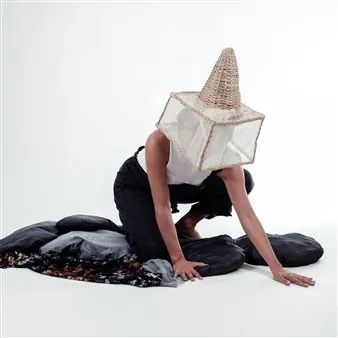

ven 9 ott · dalle 21:00
OffLabel 2026 - Homing (Estratto)
HOMING (Estratto) Marta Bevilacqua/Compagnia Arearea Il tema d’indagine di Homing è la migrazione intesa come attraversamento tra punti nello spazio, spostamento dell’anima. Il linguaggio scelto è la danza contemporanea proposta come arte del corpo fatta di gesti verbali…
 Indicazioni
Indicazioni
- Costi e prenotazioni
- Costo non indicato · Prenotazione non indicata
- Programma
- Programma da verificare. Apri la fonte ufficiale per orari e possibili aggiornamenti.
- In caso di maltempo
- Nessuna indicazione specifica pubblicata.
- Note
- Acquisito automaticamente dalla fonte.
L’EVENTO
Descrizione completa
HOMING (Estratto)
Marta Bevilacqua/Compagnia Arearea
Il tema d’indagine di Homing è la migrazione intesa come attraversamento tra punti nello spazio, spostamento dell’anima. Il linguaggio scelto è la danza contemporanea proposta come arte del corpo fatta di gesti verbali, segnici, sonori. La ricerca si appoggia su domande apparentemente molto semplici. Come si orientano balene, farfalle, uccelli, pesci? e come riescono a tornare ogni anno esattamente nel luogo in cui sono nati? E soprattutto, perché migrano? A queste e altre domande la natura curiosa dell’uomo ha da sempre cercato una risposta. Già nel IV secolo a.C., Aristotele si era accorto dell’assenza delle rondini in inverno e del loro ritorno in primavera. Nonostante la sagacia nel suo Historia animalum, non è mai riuscito a risolvere il mistero. (e a dirla tutta non c’è mai andato minimamente vicino). A quel tempo la convinzione più comune era che gli uccelli volassero fino alla luna, per poi tornare sulla Terra in primavera. Oppure che posandosi tra le fronde degli alberi in autunno, al cadere delle foglie, si spogliassero delle penne e delle piume, trasformandosi in rami. L’origine delle migrazioni si perde nella notte dei tempi. Molti migratori viaggiano da soli o in piccoli gruppi. Controllati dall’alternanza delle stagioni e dalla durata delle ore di luce e grazie agli stimoli ormonali, i migratori sanno quando è il momento di partire. Ma sanno anche come arrivare a destinazione. In zoologia, la capacità di certi animali, per lo più uccelli e pesci, di fare ritorno ai luoghi familiari da luoghi posti anche a notevole distanza, si chiama HOMING. Per trovare la strada di casa i migratori memorizzano alcuni fattori, come l’odore, la posizione nel campo magnetico terrestre, ma anche alcuni elementi visivi che contraddistinguono un posto sicuro. Che cosa significa per me tornare a casa? Quante case ho? Quali strade interiori ed esteriori dovrò percorrere per trovare spazio conosciuto? Quale sarà la mia prossima destinazione? Come vivrò il tema di questo lavoro alla luce del COVID-19? Tutti abbiamo una casa dentro di noi, intima, ed è per tutti in un posto diverso. Ognuno, come una forza magnetica, è attratto da un luogo suo, ha questo richiamo dentro e non sa neppure che cosa sia esattamente. Può coincidere con il luogo dove si nasce, ma non è detto, non sempre è così. Non per me. Ha a che fare anche con il morire, non solo con il vivere. E a volte ci perdiamo, spiaggiamo anche noi, persi, alla deriva, quando il campo magnetico è assente. In genere, in solitudine. Basta poco, per perderci, ma anche per ritrovarci. Gli uccelli, a differenza nostra, partono quando devono partire e tornano quando è il momento di tornare. Non si pongono domande gli uccelli. Se l’homing fosse solo il guardarsi intorno e il capire (o sapere) dove andare (o tornare) sarebbe tutto a posto. Il fatto è che partire ha anche dei risvolti a volte complicati, come la separazione, il lasciare gli affetti, l’andare verso l’ignoto e cose così. Più facili da affrontare quando si è giovani, più difficili con il passare del tempo. Il volo è faticoso…
Credits Coreografia e danza: Marta Bevilacqua
Musiche originali: Walter Watta Sguazzin
Elementi di scena: Ilaria Bomben
Disegno luci: Daniela Bestetti
Suono: Stefano Bragagnolo
Produzione: Compagnia Arearea 2020
CoProduzione: HangartFest 2020
Distribuzione: Theatron 2.0
Con il sostegno di: Mibact, Regione FVG
Foto: Alessandro Rizzi
IL PROGRAMMA
Programma e orari
Appuntamenti raccolti dalle fonti elencate. Dove manca un orario, non è ancora disponibile in questa scheda.
Programma pubblicato
- Dal 2026-10-09 al 2026-10-09
INFORMAZIONI UTILI
Prima di partire
- Controllare la fonte prima di partire.
ORGANIZZAZIONE